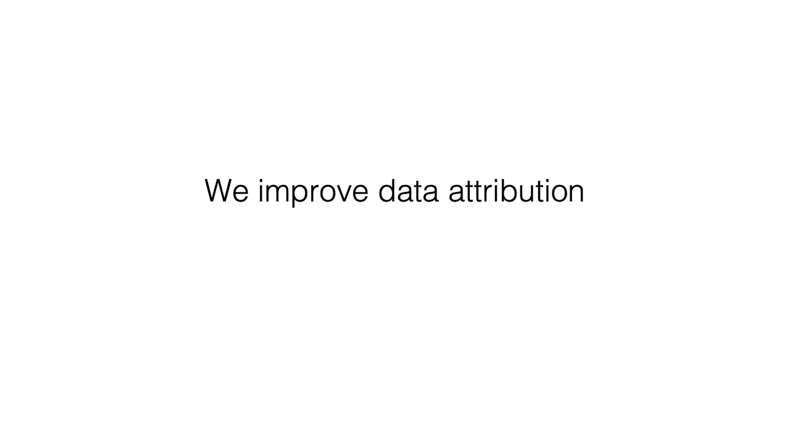

Data attribution benchmarks disagree on which methods work, and since each uses different training data, queries and tasks, it is hard to tell why. We fine-tune an LLM on fictitious facts, so we know exactly which documents taught each answer, and vary one property of the training data at a time.
Existing methods lose track of these documents when a fact is repeated across many documents or when look-alike distractors are added. The cause is at the token level: the evidence sits in a few tokens per document, but standard methods average it with every other token, and cross-entropy further suppresses the tokens the model is most confident about. Scoring each document by its top-10 tokens and using the negative log-odds loss sharply raises recall, and the loss change also helps on FTRACE‑TREX.